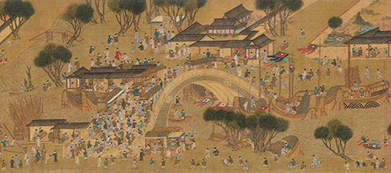

美食，顾名思义就是美味的食物，贵的有山珍海味，便宜的有街边小吃。其实美食是不分贵贱的，只要是自己喜欢的，都可以称之为美食。中国素有"烹饪王国"这个美誉。在中国这个大家庭里，我们有五十六个小家庭，每个家庭都有自己的特色美食。美食吃前有期待、吃后有回味的东西。美食遭遇心情的时候，美食已不仅仅是简单的味觉感受，更是一种精神享受。也是一种场合。场合好吃起来也有味道、人人都想吃上自己喜欢的。世界各地美食文化博大精深，营养物质各不相同，品味更多美食，享受更多健康。
公元5世纪后期，罗马人日渐式微，普罗旺斯受到来自日耳曼部落的攻击。自7世纪起，受到来自北非的阿拉伯人进攻。中世纪时，普罗旺斯反复遭受周边势力的争夺，包括来自巴塞罗那的加泰罗尼亚人、勃艮第、神圣罗马帝国、诺曼人和法国的瓦鲁瓦王朝。14世纪时，教皇克莱芒五世搬到普罗旺斯的阿维翁。由于亲缘关系的原因，普罗旺斯在1481年正式成为法国的一部分，法国国王路易十一世成为普罗旺斯的统治者。
美食不仅仅是餐桌上的食物，休闲零食，各种饼干、糕点、糖类等制品，众口难调，各有各的风味，从味觉到视觉的享受，都称之为美食！
在中国传统文化教育中的阴阳五行哲学思想、儒家伦理道德观念、中医营养养生学说，还有文化艺术成就、饮食审美风尚、民族性格特征诸多因素的影响下，创造出彪炳史册的中国烹饪技艺，形成博大精深的中国饮食文化。
